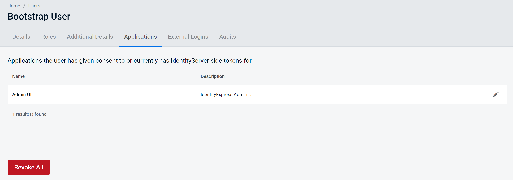

Editing a User
Access the User Details screen by finding the user that you want to edit in the Users page list.
This will take you to the User Details screen, where you can edit the required User details.
You will notice that there are several key tabs, which we will cover in detail.
Details Tab
The default tab is the "Details" tab, where you will see the User ID, and be able to edit the following elements of a user:
- Username
- First name
- Last name
- Organization
- Any additional, custom required claims you have created
You will also be able to set a user to "Blocked" or remove their blocked status and set them to "Active" again.
Once you have successfully made the edits you require, click Save, and you should then see a success dialogue informing you that your changes have been saved.
Roles Tab
Clicking on the Roles tab allows you to assign roles to a User.
Roles administration is explained in more detail in the Roles section, however, you can assign Roles to a user from the Users dialogue.
Using this screen you can assign avaliable roles to this user, select the arrow to move the selected roles from Available to Assigned.
To remove roles from a user, select the roles you want to remove and click the arrow to move the role from "Assigned" to "Available".
Additional Details Tab
Within the User Details page, clicking on the Additional Details tab enables you to add relevant additional optional user details, known as Claims.
Here you can assign and remove claims for a specific user.
To add a claim click on the "Add Claim" button. This will open a dialog to create a claim.
Select a claim type from the drop-down of the full list of User claim types, enter a value, and click add to assign the claim to the user.
You should then see a success dialogue informing you that your claim has been added.
You can choose to edit or delete any claim. Click the pencil icon to edit the claim, or the delete icon to remove the claim entirely from this user.
Editing the claim will turn the field into a writeable text-box that will allow you to change the value of the claim.
Applications tab
Clicking on the Applications tab in the User Details page enables you to view all Applications that the selected User has given consent to.

Select an application to see more details about the application including what scopes the application has access to.
From here you can also revoke a users consent.